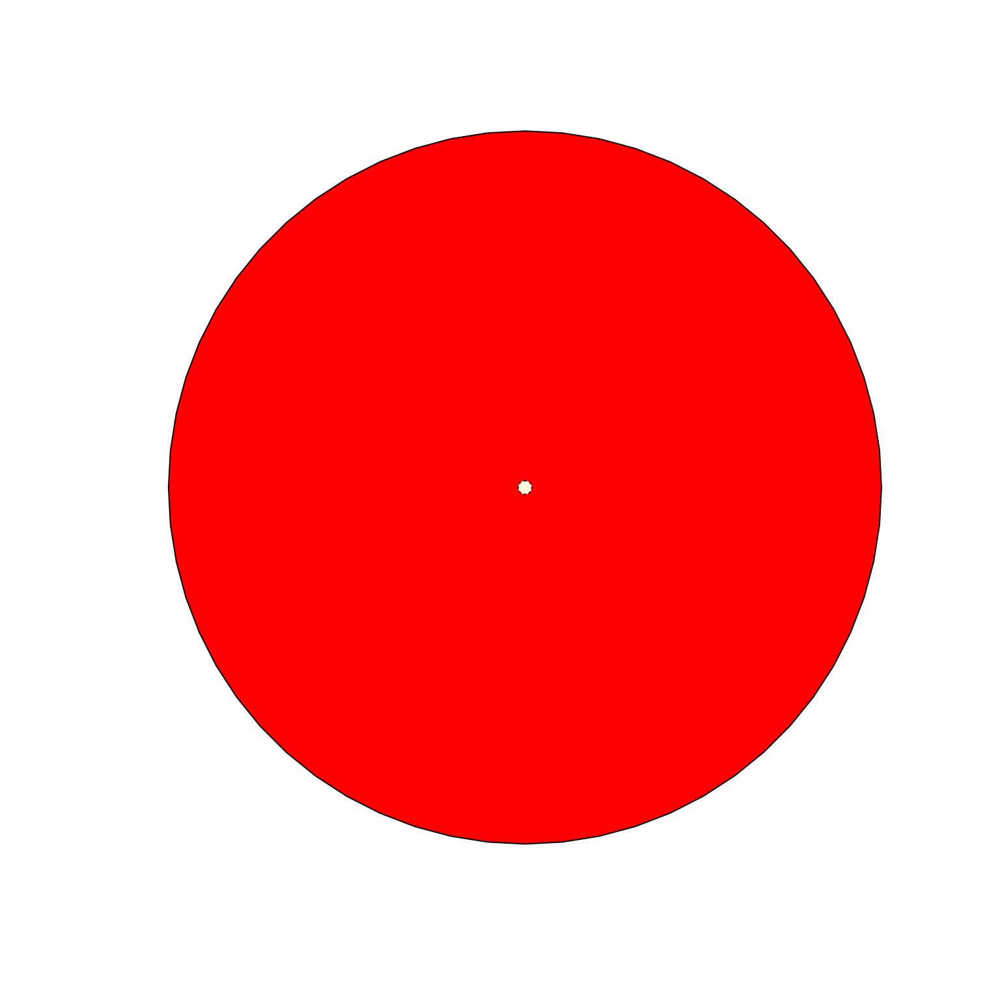
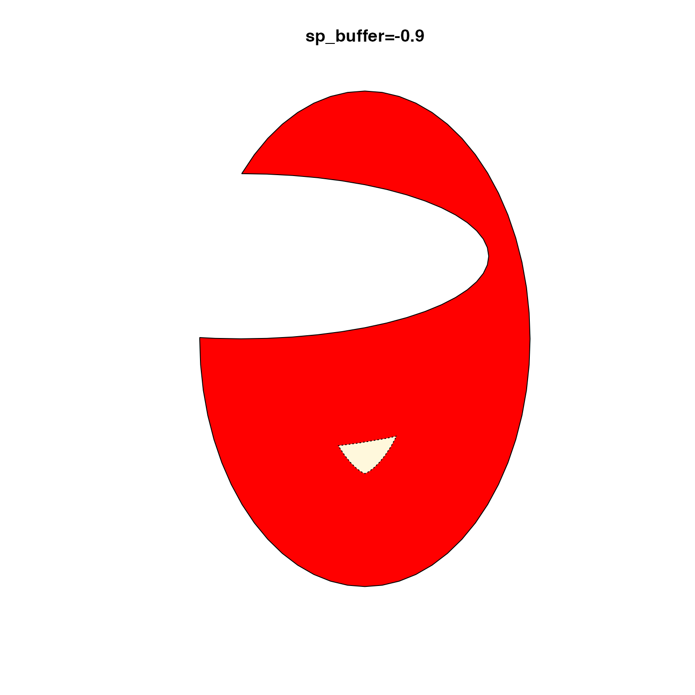

Get SpatialPolygons after applying buffer width
get_sp_buffer(
sp,
sp_buffer = -0.5,
steps = 50,
relative_size = TRUE,
verbose = FALSE,
...
)Arguments
- sp
sp::SpatialPolygonsor equivalent object as input.- sp_buffer
numericvalue, usually negative, which will create a buffer inside thesppolygon.- steps
integernumber of steps to iterate betweensp_bufferand0.- verbose
logicalindicating whether to print verbose output.- ...
additional arguments are ignored.
- relative
logicalindicating whethersp_bufferis a fraction of the buffer width required to reduce thesppolygon to zero area.
Details
This function is intended to help apply negative buffer width, where the intended buffer width may result in a zero-size polygon, in which case a progressively smaller buffer width is applied until a polygon can be returned with non-zero area.
An added bonus, when relative=TRUE it will determine
the actual buffer value that would barely result in non-zero
area, and define that as 1x buffer, and the sp_buffer
will be scaled to that value. So sp_buffer=-0.5 will
return an interior polygon at half the width it would take
to reduce the polygon to zero size. See examples.
Ultimately if no buffer can be applied, then the input sp
object is returned without change.
This function is useful to draw a line segment from outside into a polygon, without drawing it to the center point of the polygon, where a text label may already be positioned.
See also
Other venndir spatial:
degrees_to_adj(),
diff_degrees(),
display_angles(),
get_largest_polygon(),
intersect_polygons(),
mean_degree_arc(),
mean_degrees(),
nudge_sp(),
rescale_coordinates(),
rescale_sp(),
sp_circles(),
sp_ellipses(),
spread_degrees(),
union_polygons()
Examples
sp <- get_venn_shapes(counts=c(A=1))
plot(sp, col="red")
sp_inside <- get_sp_buffer(sp, -100, relative=FALSE)
plot(sp_inside, col="cornsilk", lty="dotted", add=TRUE);

# by default relative=TRUE
sp1 <- sp_ellipses(c(3.5, 2), c(2, 3), xradius=c(2, 3), yradius=c(3, 1))
sp <- rgeos::gDifference(sp1[1], sp1[2]);
opar <- par("mfrow"=c(2,2));
on.exit(par(opar));
for (i in -c(0.9, 0.75, 0.5, 0.25)) {
plot(sp, col="red",
main=paste0("sp_buffer=", i));
plot(get_sp_buffer(sp, i, relative=TRUE),
col="cornsilk", lty="dotted", add=TRUE);
}


 par(opar);
par(opar);